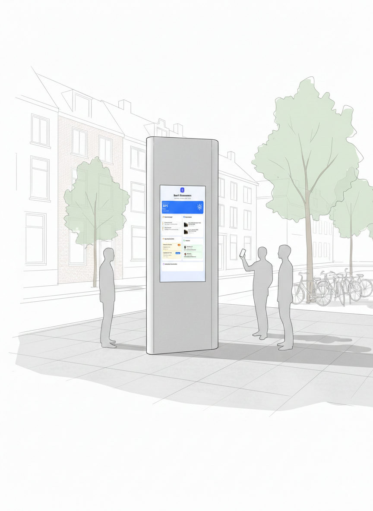
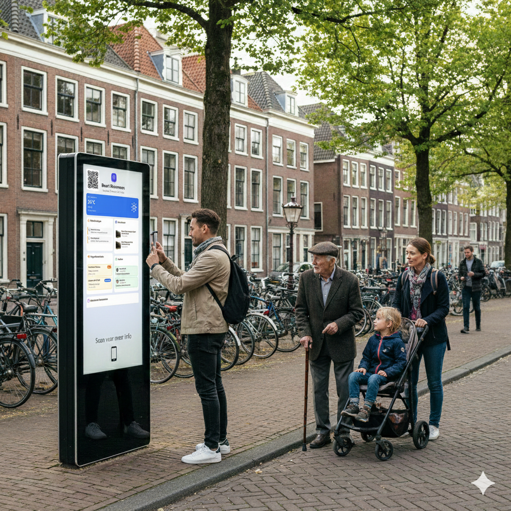
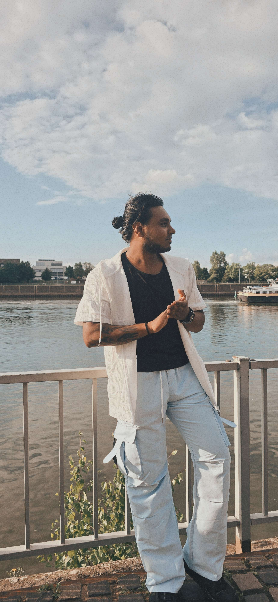
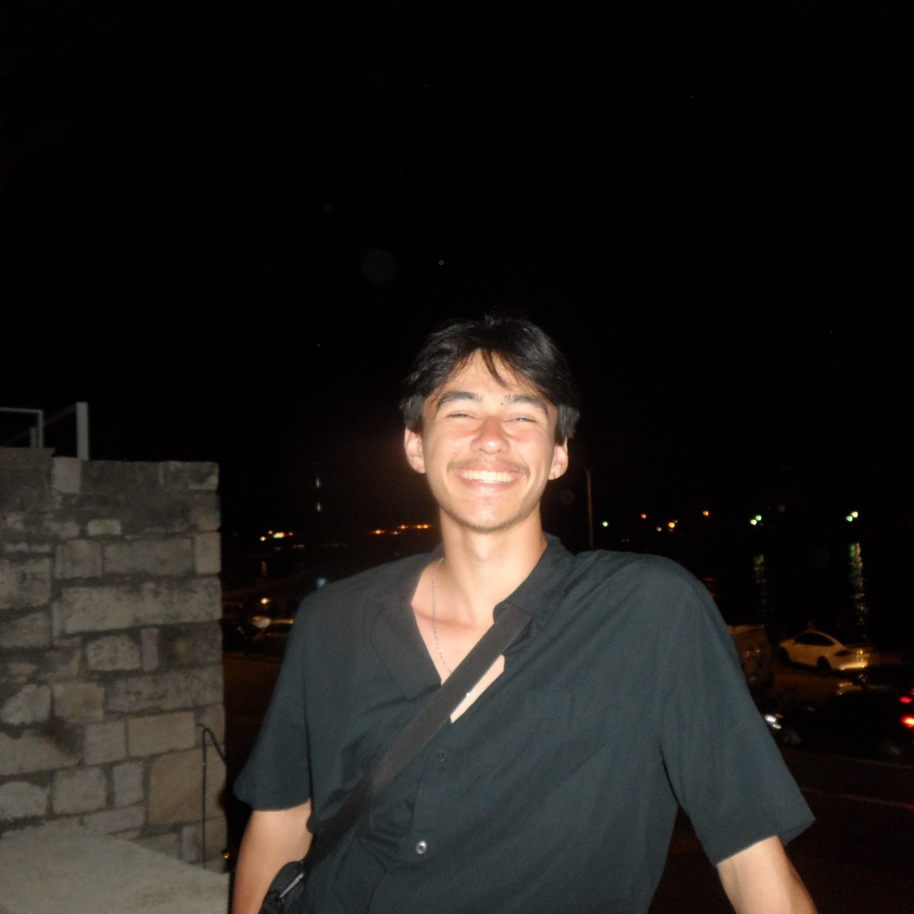

Gemeente Rotterdam
Samen bouwen aan een leefbare, duurzame en innovatieve stad.
Jouw wijk zichtbaar in data. Interactieve wijkborden maken stedelijke plannen, werkzaamheden en veranderingen in de wijk inzichtelijk. Door data zichtbaar en begrijpelijk te maken in de openbare ruimte, kunnen bewoners laagdrempelig meedenken en invloed uitoefenen op de ontwikkeling van hun leefomgeving.
Ontwerpvraag
Hoe kunnen we buurtbewoners van de gemeente Rotterdam op een toegankelijke manier betrekken bij ontwikkelingen in hun wijk?

Samen bouwen aan een leefbare, duurzame en innovatieve stad.
De digitale samenleving voor creativiteit en transparantie in Rotterdam.
Cityverse brengt een urban digital twin die bewoners en data ontwikkelingen verbindt.
Bewoners kunnen in hun eigen wijk, in de openbare ruimte, actuele en visueel duidelijke informatie zien over wat er speelt en wat er gaat veranderen in de buurt op een scherm.
De doelgroep bestaat uit buurtbewoners van de gemeente Rotterdam die direct te maken hebben met ontwikkelingen in hun wijk, zoals bouwprojecten, herinrichting van openbare ruimte of duurzaamheids initiatieven.
Binnen deze groep is sprake van diversiteit in:
De doelgroep beweegt zich voornamelijk binnen hun eigen wijk. Betrokkenheid ontstaat vooral wanneer informatie herkenbaar, relevant en zichtbaar is in hun directe leefomgeving.

Helder krijgen of de huidige situatie klopt en of de gemeente dit ook als probleem ziet. Indien er tijd is, een eerste concept prototype maken.
To be continued

